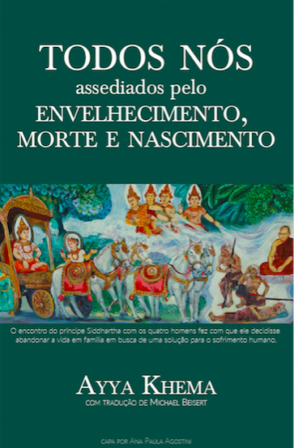

A U D I O B O O K S
Passe o mouse
na capa do audiobook
ABC do Budismo
Michael Beisert

Foto da Capa: Pintura na parede de um monastério nas colinas de Sagaing
nos arredores de Mandalay, Myanmar.
Muito provavelmente o título deste livro deve provocar algum tipo de rejeição, afinal ninguém quer nem pensar em velhice e muito menos morte. Mas curiosamente há poucas certezas na vida e entre elas estão justamente a velhice e a morte. Ayya Khema tem boas coisas a dizer sobre essas certezas da vida e como estar bem preparado.
Baixe o Audiobook completo em formato compatível com Apple M4B.
Ou baixe cada capítulo em MP3: (1) Introdução; (2) O Dhamma do Abençoado; (3) Aceitando a Si Mesmo; (4) Para Controlar a Própria Mente; (5) Seja Ninguém; (6) Guerra e Paz; (7) Não Dualidade; (8) Renúncia; (9) Isolamento Ideal; (10) Dukkha para Conhecimento e Visão; (11) As Nossas Tendências Subjacentes; (12) Sem Sofrimento, Imaculado e Seguro; (13) Caminho e Fruto.